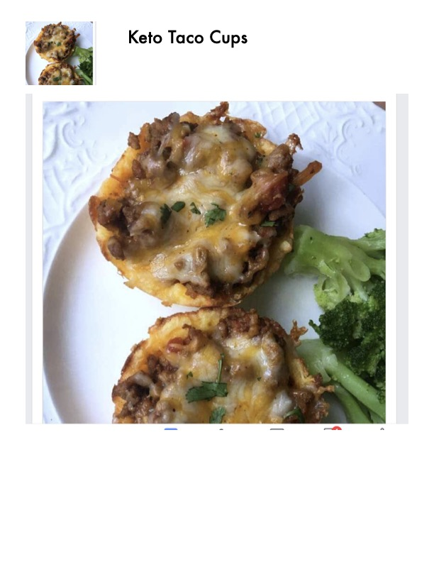

Keto Taco Cups

Original cookbook page 15
Low-carb, keto-friendly taco cups made in a muffin tin with a coconut flour base, filled with taco meat and topped with melted cheddar cheese. Individual portion-sized taco bites perfect for meal prep.
Prep: 15 minutes • Cook: 13 minutes • Total: 30 minutes
Ingredients
- 4½ tablespoons butter, melted and cooled
- ⅓ cup coconut flour
- 1 oz cream cheese, softened
- 4 eggs
- ¼ teaspoon salt
- ¼ teaspoon baking powder
- ½ teaspoon garlic powder
- 1½ cups cheddar cheese, shredded
- Prepared taco meat for filling (ground beef with taco seasonings)
Instructions
- Preheat oven to 400°F and grease a muffin pan.
- Combine melted butter (cooled), eggs, salt, and cream cheese, then whisk together.
- Add coconut flour, baking powder, and spices to the mixture and stir until combined.
- Stir in cheeses.
- Spoon batter into muffin tins.
- Spray fingers with cooking spray. Pat the batter around the sides of muffin tins to form a cup.
- Bake for 8 minutes, then remove from oven. If the dough rises, push it back down with the back of a spoon.
- Spoon taco meat into taco cups.
- Sprinkle about a tablespoon of cheese on top of taco meat.
- Put back in oven and continue baking for 5 minutes or until cheese is melted and taco cups are baked all the way through.
📝 Recipe Notes
Uses coconut flour for keto-friendly base. Great for meal prep. Make sure taco meat is prepared ahead of time. Combined from pages 15-16.
Recipe #15 from collection